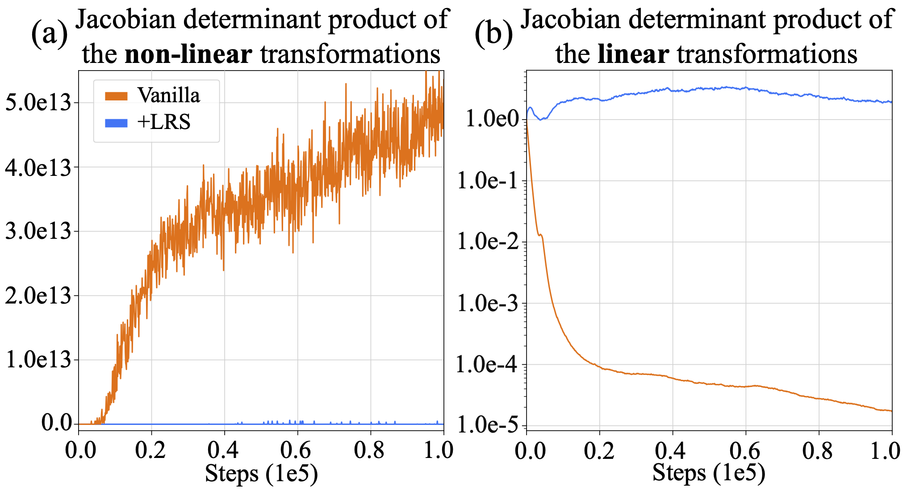
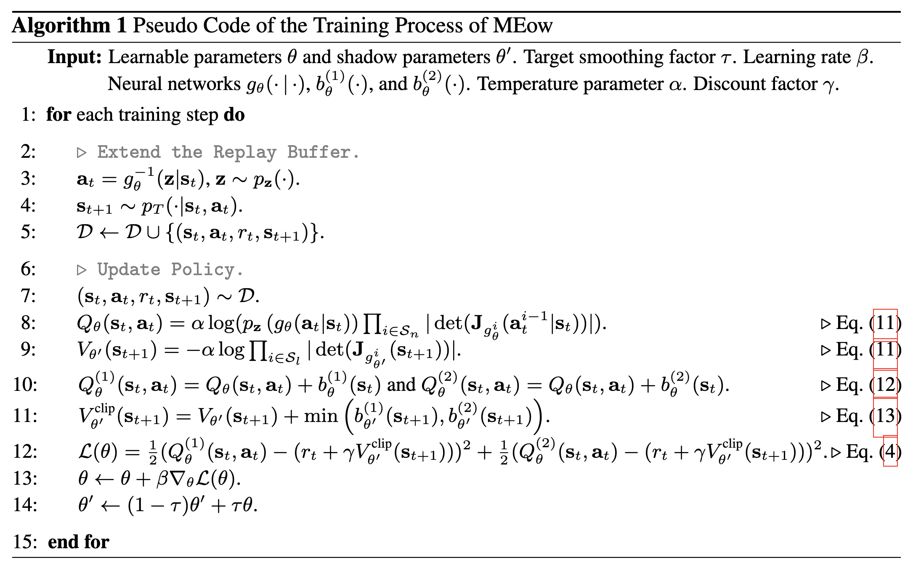
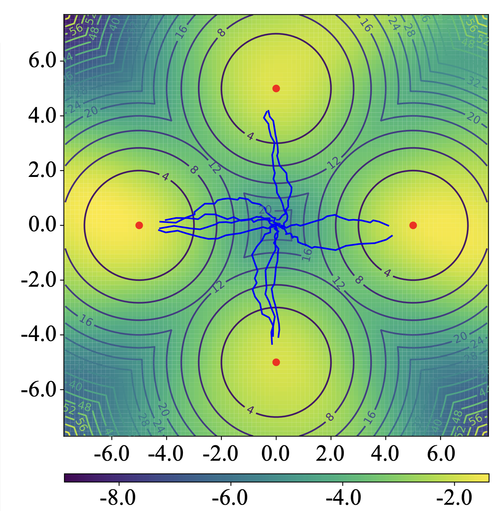
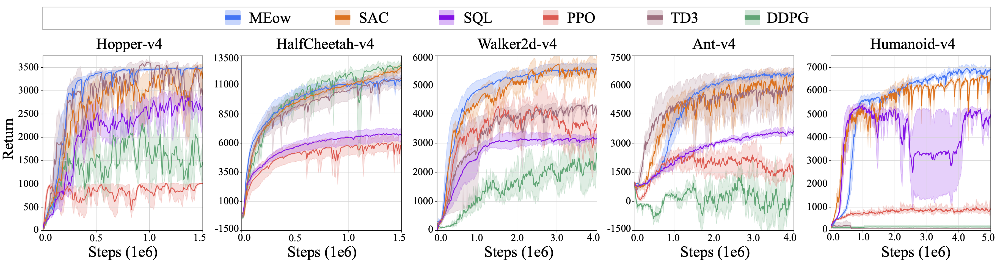
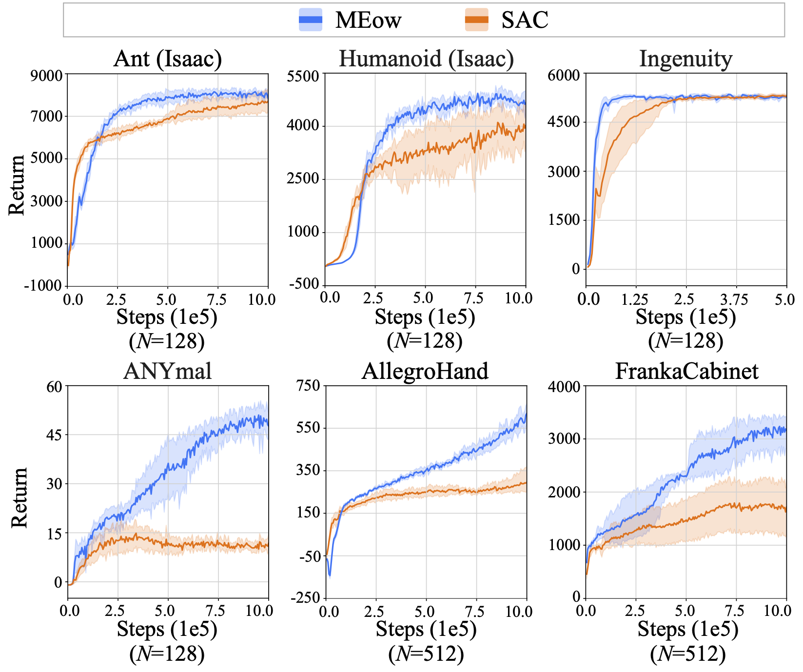
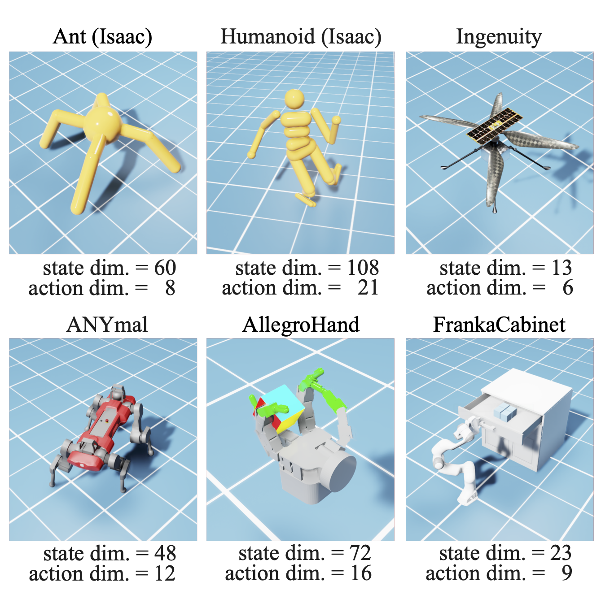
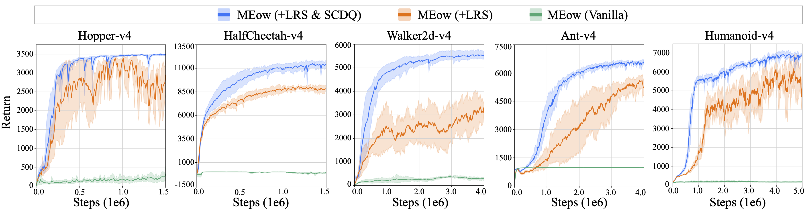

This blog post offers an introduction to our proposed MEow algorithm. We begin with an review of MaxEnt RL and EBFlow. Then, we explore the connections between these models by introducing MEow. Finally, we present experimental results to demonstrate the effectiveness of the proposed method. If you have any questions, please feel free to email Chen-Hao Chao. If you find this information useful, please consider sharing it with your friends.
▶Maximum Entropy Reinforcement Learning (MaxEnt RL) augments standard RL objective with entropy rewards:
$$\begin{equation} \label{eq:reward_objective} \policy_{\mathrm{MaxEnt}}^{*} = \underset{\policy}{\argmax}\, \sum_{t} \E_{(\vs_t, \va_t)\sim \rho_{\policy}}\ofmid{ r_t+\textcolor{blue}{\alpha \H(\policy(\cdot|\vs_t)) }}. \end{equation}$$
And according to previous works [1, 2], the optiaml policy for Eq. (\ref{eq:reward_objective}) is given by:
\begin{equation} \label{eq:optimal_policy} \policy^{*}_{\mathrm{MaxEnt}}(\va_t|\vs_t) = \exp \of{ \frac{1}{\alpha}(Q^{*}_{\mathrm{soft}}(\vs_t, \va_t) - V^{*}_{\mathrm{soft}}(\vs_t)) }, \end{equation}
where
\begin{equation} \label{eq:soft_value} Q^{*}_{\mathrm{soft}}(\vs_t, \va_t) = r_t + \gamma \E_{\vs_{t+1} \sim p_T} \ofmid{ V^{*}_{\mathrm{soft}}(\vs_{t+1})},\,\,\,\,\, V^{*}_{\mathrm{soft}}(\vs_t) = \alpha \log \int \exp \of{\frac{1}{\alpha}Q^{*}_{\mathrm{soft}}(\vs_t, \va)} d\va. \end{equation}
In practice, a policy can be modeled as $\policy_\theta(\va_t|\vs_t)=\exp(\frac{1}{\alpha}(Q_\theta (\vs_t, \va_t)-V_\theta(\vs_t)))$ with parameter $\theta$, where the soft Q-function and the soft value function are expressed as $Q_\theta(\vs_t, \va_t)$ and $V_\theta(\vs_t) = \alpha \log \int \exp \of{\frac{1}{\alpha}Q_\theta(\vs_t, \va_t)} d\va_t$, respectively. Given an experience reply buffer $\D$ that stores transition tuples $(\vs_t, \va_t, r_t, \vs_{t+1})$, the training objective of $Q_\theta$ (which can then be used to derive $V_\theta$ and $\policy_\theta$) can be written as the following equation according to the soft Bellman errors:
\begin{equation} \label{eq:sql_loss} \L(\theta) = \E_{(\vs_t, \va_t, r_t, \vs_{t+1})\sim \D} \left[\frac{1}{2} \left(Q_\theta (\vs_{t}, \va_t) - (r_t + \discount V_\theta (\vs_{t+1})) \right)^2 \right]. \end{equation}
Nonetheless, directly using this objective presents two challenges:
▶Energy-based Normalizing Flows (EBFlow) [3] were recently introduced to reinterpret flow-based models as energy-based models. Specifically, a normalizing flow with $L$ layers of transformations can be divided into non-linear $S_n$ and linear $S_l$ parts, which correspond to the unnormalized density and normalizing constant in an energy-based model, as illustrated in the following equation:
\begin{equation} \label{eq:ebflow} \begin{aligned} p_\theta (\vx) &= \prior \of{g_\theta(\vx)} \prod_{i=1}^{L} \abs{\det \of{\jacob_{g_\theta^i}(\vx^{i-1})}}\\ &= \underbrace{\prior \of{g_\theta(\vx)}\prod_{i\in \Sn}\abs{\det \of{\jacob_{g^i_\theta}(\vx^{i-1})}}}_{\text{Unnormalized Density}} \underbrace{\prod_{i\in \Sl}\abs{\det \of{\jacob_{g^i_\theta}}}}_{\text{Const.}}\\ &\triangleq \underbrace{\exp \of{-E_\theta(\vx)}}_{\text{Unnormalized Density}} \underbrace{Z^{-1}_\theta.}_{\ \text{Const.}}\\ \end{aligned} \end{equation}
In EBFlow, the energy function $E_\theta(\vx)$ is defined as $-\log (\prior \of{g_\theta(\vx)}\prod_{i\in \Sn}|\det (\jacob_{g^i_\theta}(\vx^{i-1}))|)$ and the normalizing constant $Z_\theta=\int \exp(-E_\theta(\vx)) d\vx=\prod_{i\in \Sl}|\det \jacob_{g^i_\theta}|^{-1}$ is independent of $\vx$. The input-independence of $Z_\theta$ holds since $g^i_\theta$ is either a first-degree or zero-degree polynomial for any $i\in\Sl$, and thus its Jacobian is a constant to $\vx^{i-1}$. This technique was originally proposed to reduce the training cost of maximum likelihood estimation for normalizing flows. However, we discovered that EBFlow is ideal for MaxEnt RL. Its unique capability to represent a parametric energy function with an associated sampler $g^{-1}_\theta$, and to calculate a normalizing constant $Z_\theta$ without integration are able to address the challenges mentioned above. We discuss our insights in the next section.
We propose a new framework for modeling MaxEnt RL using EBFlow, which we call MEow. The key idea behind MEow is that the policy can be viewed as an state-conditioned EBFlow:
$$ \begin{equation} \label{eq:meow} \begin{aligned} \policy_\theta(\va_t|\vs_t) &= \underbrace{\prior \of{g_\theta(\va_t|\vs_t)}\prod_{i \in \Sn}\abs{\det \of{\jacob_{g^i_\theta}(\va_t^{i-1}|\vs_t)}}}_{\text{Unnormalized Density}} \underbrace{\prod_{i\in \Sl}\abs{\det (\jacob_{g^i_\theta}(\vs_t))}}_{\text{Norm. Const.}} \\ &\triangleq \underbrace{\exp \of{\frac{1}{\alpha} Q_\theta(\vs_t, \va_t)}}_{\text{Unnormalized Density}} \underbrace{\exp \of{-\frac{1}{\alpha} V_\theta(\vs_t)}}_{\ \text{Norm. Const.}},\\ \end{aligned} \end{equation} $$
where the soft Q-function and the soft value function are selected as follows:
$$ \begin{equation} \label{eq:Q_value_function} \begin{aligned} Q_\theta(\vs_t, \va_t) &\triangleq \alpha \log \prior \of{g_\theta(\va_t|\vs_t)}\prod_{i \in \Sn}\abs{\det \of{\jacob_{g^i_\theta}(\va_t^{i-1}|\vs_t)}},\\ V_\theta(\vs_t) &\triangleq -\alpha \log \prod_{i\in \Sl}\abs{\det (\jacob_{g^i_\theta}(\vs_t))}. \end{aligned} \end{equation} $$
Such a selection satisfies $V_\theta(\vs_{t}) = \alpha \log \int \exp (Q_\theta(\vs_t, \va)/ \alpha) d\va$ based on the property of EBFlow. In addition, both $Q_\theta$ and $V_\theta$ have a common output codomain $\R$, which enables them to learn to output arbitrary real values. For a detailed proof, please refer to our paper.
▶Training: With $Q_\theta$ and $V_\theta$ defined in Eq. (\ref{eq:Q_value_function}), the loss $\L(\theta)$ in Eq. (\ref{eq:sql_loss}) can be calculated without using Monte Carlo approximation of the soft value function target. Compared to the previous MaxEnt RL frameworks that rely on Monte Carlo estimation [1, 2], our framework offers the advantage of avoiding the errors induced by the approximation. In addition, MEow employs a unified policy rather than two separate roles (i.e., the actor and the critic), which eliminates the need for minimizing an additional policy improvement loss $\L(\phi)$ to bridge the gap between $\policy_\theta$ and $\policy_\phi$. This simplifies the training process of MaxEnt RL, and obviates the requirement of balancing between the two optimization loops.
▶Inference: The sampling process of $\policy_\theta$ can be efficiently performed by deriving the inverse of $g_\theta$, as supported by several normalizing flow architectures. In addition, unlike previous actor-critic frameworks susceptible to discrepancies between $\policy_\theta$ and $\policy_\phi$, the distribution established via $g^{-1}_\theta(\vz|\vs_t)$, where $\vz \sim \prior$, is consistently aligned with the pdf defined by $Q_\theta$. As a result, the actions taken by MEow can precisely reflect the learned soft Q-function.
▶The Learnable Reward Shifting (LRS) Technique: Although $Q_\theta$ and $V_\theta$ defined in Eq. (\ref{eq:Q_value_function}) can theoretically learn arbitrary real values, in practice, they may encounter numerical instability during training due to the extensive growth of $\prod_{i \in \Sn}|\det (\jacob_{g^i_\theta}(\va_t^{i-1}|\vs_t))|$ and the extensive decay of $\prod_{i \in \Sl}|\det (\jacob_{g^i_\theta}(\vs_t))|$. This trend is demonstrated in the orange curves in Fig. 1.
To assist $\policy_\theta$ in predicting the soft Q and value functions, we propose adopting a shifting function $b_\theta: \sS \to \R$, which can be modeled using any neural network, and re-expressing the soft Q-function as $Q^b_\theta$ as follows:
\begin{equation} \label{eq:Q_value_scale} Q^b_\theta (\vs_t, \va_t) = Q_\theta (\vs_t, \va_t) + b_\theta(\vs_t). \end{equation}
 Figure 1. The Jacobian determinant products for (a) the non-linear and (b) the linear transformations, evaluated during training in the Hopper-v4 environment.
The corresponding soft value function becomes $V_\theta^b(\vs_t)\triangleq\alpha \log \int \exp(Q^b_\theta(\vs_t, \va)/\alpha) d\va=V_\theta(\vs_t)+b_\theta(\vs_t)$, which can be calculated without Monte Carlo estimation. Under the redefined $Q^b_\theta$ and $V^b_\theta$, the original $Q_\theta$ and $V_\theta$ become the residuals of $b_\theta$. This helps reducing the magnitude of the Jacobian determinant products, as evidenced in the blue lines in Fig. 1. Moreover, with the incorporation of $b_\theta$, the policy $\policy_\theta$ remains invariant since:
\begin{equation} \exp(\frac{1}{\alpha}(Q^b_\theta(\vs_t, \va_t) - V_\theta^b(\vs_t))) = \exp(\frac{1}{\alpha}((Q_\theta(\vs_t, \va_t) + b_\theta(\vs_t))- (V_\theta(\vs_t)+b_\theta(\vs_t)) )) = \exp(\frac{1}{\alpha}(Q_\theta(\vs_t, \va_t) - V_\theta(\vs_t))), \end{equation}
which allows the use of $g^{-1}_\theta$ for efficiently sampling actions. As a result, the aformentioned training and inference processes remain unchanged by using $Q^b_\theta$ and $V^b_\theta$ as the regressors.
▶The Shifting-Based Clipped Double Q-Learning (SCDQ) Technique: As observed in [4], the overestimation of value functions often occurs in training. To address this issue, the authors in [4] propose clipped double Q-learning, which employs two separate Q-functions and uses the one with the smaller output to estimate the value function during training. Inspired by this and our proposed learnable reward shifting, we further propose a shifting-based method that adopts two learnable reward shifting functions, $b^{(1)}_{\theta}$ and $b^{(2)}_{\theta}$, without duplicating the soft Q-function $Q_\theta$ and soft value function $V_\theta$ defined by $g_\theta$. The soft Q-functions $Q^{(1)}_{\theta}$ and $Q^{(2)}_{\theta}$ with corresponding learnable reward shifting functions $b^{(1)}_{\theta}$ and $b^{(2)}_{\theta}$ can be obtained using Eq. (\ref{eq:Q_value_scale}), while the soft value function $V_\theta^{\text{clip}}$ is written as the following formula:
\begin{equation} \label{eq:double_V} V^{\text{clip}}_{\theta} (\vs_t) = \min \of{V_\theta (\vs_t) + b_\theta^{(1)}(\vs_t), V_\theta (\vs_t) + b_\theta^{(2)}(\vs_t) }= V_\theta (\vs_t) + \min \of{b_\theta^{(1)}(\vs_t), b_\theta^{(2)}(\vs_t)}. \end{equation}
This design also prevents the production of two policies in MEow, as having two policies can complicate the inference procedure. In the next section, we demonstrate that this technique can effectively improve the training process of MEow.
▶Algorithm Summary:

▶Two-dimensional Multi-goal Environment: In this subsection, we present an example of MEow trained in a two-dimensional multi-goal environment [1]. The environment involves four goals, indicated by the red dots in Fig. 2. The reward function is defined by the negative Euclidean distance from each state to the nearest goal, and the corresponding reward landscape is depicted using contours in Fig. 2. The gradient map in Fig. 2 represents the soft value function predicted by our model. The blue lines extending from the center represent the trajectories produced using our policy.
As illustrated in Fig. 2, our model's soft value function predicts higher values around the goals, suggesting successful learning of the goal positions through rewards. In addition, the trajectories demonstrate our agent's correct transitions towards the goals, which validates the effectiveness of our learned policy.

Figure 2.The soft value function and the trajectories generated using our method on the multi-goal environment.
▶Performance Comparison on the MuJoCo Environments:
 Figure 3. The results in terms of total returns versus the number of training steps evaluated on five MuJoCo environments. Each curve represents the mean performance, with shaded areas indicating the 95% confidence intervals, derived from five independent runs with different seeds.
As depicted in Fig. 3, MEow performs comparably to SAC and outperforms the other baseline algorithms in most of the environments. Furthermore, in environments with larger action and state dimensionalities, such as `Ant-v4' and `Humanoid-v4', MEow offers performance improvements over SAC and exhibits fewer spikes in the evaluation curves. These results suggest that MEow is capable of performing high-dimensional tasks with stability. To further investigate the performance difference between MEow and SAC, we provide a performance examination using the simulation environments from the Omniverse Isaac Gym [5] in the next subsection.
▶Performance Comparison on the Omniverse Issac Gym Environments [5]:

Figure 4. A comparison on six Isaac Gym environments.
Each curve represents the mean performance of five runs, with shaded areas indicating the 95% confidence intervals.
`Steps' in the x-axis represents the number of training steps, each of which consists of $N$ parallelizable interactions with the environments.

Figure 5. A demonstration of the six Isaac Gym environments.
The dimensionalities of the state and action for each environment are denoted below each subfigure.
In this subsection, we examine the performance of MEow on a variety of robotic tasks simulated by Omniverse Isaac Gym [5], a GPU-based physics simulation platform. In addition to `Ant' and `Humanoid', we employ four additional tasks: `Ingenuity', `ANYmal', `AllegroHand', and `FrankaCabinet'. All of them are designed based on real-world robotic application scenarios. `Ingenuity' and `ANYmal' are locomotion environments inspired by NASA’s Ingenuity helicopter and ANYbotics' industrial maintenance robots, respectively. On the other hand, `AllegroHand' and `FrankaCabinet' focus on executing specialized manipulative tasks with robotic hands and arms, respectively. A demonstration of these tasks is illustrated in Fig. 5.
In this experimental comparison, we adopt SAC as a baseline due to its excellent performance in the MuJoCo environments. The evaluation results are presented in Fig. 4. The results demonstrate that MEow exhibits superior performance on `Ant (Isaac)' and `Humanoid (Isaac)'. In addition, MEow consistently outperforms SAC across the four robotic environments (i.e., `Ingenuity', `ANYmal', `AllegroHand', and `FrankaCabinet'), indicating that our algorithm possesses the ability to perform challenging robotic tasks simulated based on real-world application scenarios.
▶Ablation Analysis:
 Figure 6. The performance comparison of MEow's variants (i.e., `MEow (Vanilla)', `MEow (+LRS)', and `MEow (+LRS \& SCDQ)') on five MuJoCo environments. Each curve represents the mean performance of five runs, with shaded areas indicating the 95% confidence intervals.
In this subsection, we provide an ablation analysis to examine the effectiveness of each training technique introduced in Methodology. Fig. 6 compares the performance of three variants of MEow: `MEow (Vanilla)', `MEow (+LRS)', and `MEow (+LRS & SCDQ)', across five MuJoCo environments. The results show that `MEow (Vanilla)' consistently underperforms, with its total returns demonstrating negligible or no growth throughout the training period. In contrast, the variants incorporating translation functions demonstrate significant performance enhancements. This observation highlights the importance of including $b_\theta$ in the model design. In addition, the comparison between `MEow (+LRS)' and `MEow (+LRS & SCDQ)' suggests that our reformulated approach to clipped double Q-learning improves the final performance by a noticeable margin. These findings thus validate the effectiveness of the proposed training techniques.
[1] T. Haarnoja, H. Tang, P. Abbeel, and S. Levine. Reinforcement Learning with Deep Energy-Based Policies. In Proceedings of the International Conference on Machine Learning (ICML), 2017.
[2] T. Haarnoja, A. Zhou, P. Abbeel, and S. Levine. Soft Actor-Critic: Off-Policy Maximum Entropy Deep Reinforcement Learning with a Stochastic Actor. In Proceedings of the International Conference on Machine Learning (ICML), 2017.
[3] C.-H. Chao, W.-F. Sun, Y.-C. Hsu, Z. Kira, and C.-Y. Lee. Training Energy- Based Normalizing Flow with Score-Matching Objectives. In Proceedings of the International Conference on Neural Information Processing Systems (NeurIPS), 2023.
[4] S. Fujimoto, H. v. Hoof, and D. Meger. Addressing Function Approximation Error in Actor-Critic Methods. In Proceedings of the International Conference on Machine Learning (ICML), 2018.
[5] V. Makoviychuk, L. Wawrzyniak, Y. Guo, M. Lu, K. Storey, M. Macklin, D. Hoeller, N. Rudin, A. Allshire, A. Handa, and G. State. Isaac Gym: High Performance GPU-Based Physics Simulation For Robot Learning. Proceedings of the International Conference on Neural Information Processing Systems (NeurIPS) Dataset and Benchmark Track, 2021.
@inproceedings{chao2024maximum,
title={Maximum Entropy Reinforcement Learning via Energy-Based Normalizing Flow},
author={Chao, Chen-Hao and Feng, Chien and Sun, Wei-Fang and Lee, Cheng-Kuang and See, Simon and Lee, Chun-Yi},
booktitle={Proceedings of International Conference on Neural Information Processing Systems (NeurIPS)}
year={2024}
}